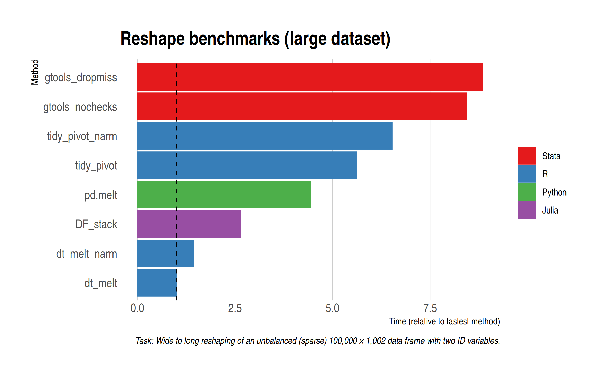
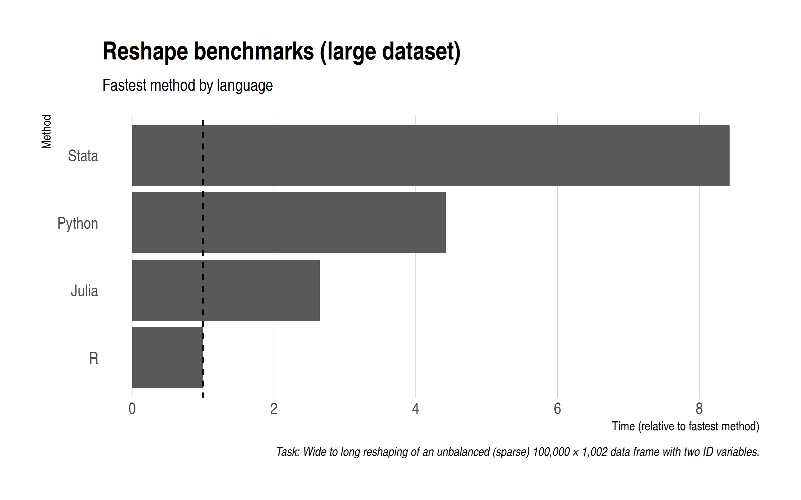

Various people have asked me to add some additional benchmarks to my data reshaping post from earlier this week. I’ve been hesitant to add these as an update, since I didn’t want to distract from the major point I was trying to make in that previous post.1 However, I’m happy to put these additional benchmarks in a new blog post here.
The additional benchmarks that we’ll be considering today are:
- R:
base::reshape() - Stata:
greshapewith the “dropmiss” and “nochecks” arguments added - Python:
pandas.melt - Julia: DataFrames
stack
These will go alongside the core routines from my original post…
- R:
data.table::meltandtidyr::pivot_longer - Stata:
reshape,sreshape(shreshape), andgreshape(gtools)
I’ll divide the results into two sections.
Small(ish) data
Our first task will be to reshape the same (sparse) 1,000 by 1,002 dataset from wide to long. Here are the results and I’ll remind you that the x-axis has been log-transformed to handle scaling.

Once more, we see that data.table rules the roost. However, the newly-added DataFrames (Julia) and pandas (Python) implementations certainly put in a good shout, coming in second and third, respectively. Interestingly enough, my two tidyr benchmarks seemed to have shuffled slightly this time around, but that’s only to be expected for very quick operations like this. (We’ll test again in a moment on a larger dataset.) Adding options to gtools yields a fairly modest if noticeable difference, while the base R reshape() command doesn’t totally discrace itself. Certainly much faster than the Stata equivalent.
Large(ish) data
Another thing to ponder is whether the results are sensitive to the relatively small size of the test data. The long-form dataset is “only” 1 million rows deep and the fastest methods complete in only a few milliseconds. So, for this next set of benchmarks, I’ve scaled up to the data by two orders of magnitude: Now we want to reshape a 100,000 by 1,002 dataset from wide to long. In other words, the resulting long-form dataset is 100 million rows deep.2
Without further ado, here are the results. Note that I’m dropping the slowest methods (because I’m not a masochist) and this also means that I won’t need to log-transform the x-axis anymore.

Reassuringly, everything stays pretty much the same from a rankings perspective. The ratios between the different methods are very close to the small data benchmarks. The most notable thing is that gtools manages to claw back time (suggesting some initial overhead penalty), although it still lags the other methods. For reference, the default data.table melt() method completes in just over a second on my laptop, which is just crazy fast. All of the methods here are impressively quick, to be honest.
Summarizing, here is each language represented by its fastest method.

Code
See my previous post for the data generation and plotting code. (Remember to set n = 1e8 for the large data benchmark.) For the sake of brevity, here is quick recap of the main reshaping functions that I use across the different languages and how I record timing.
R
# Libraries ---------------------------------------------------------------
library(tidyverse)
library(data.table)
library(microbenchmark)
# Data --------------------------------------------------------------------
d = fread('sparse-wide.csv')
# Base --------------------------------------------------------------------
base_reshape = function() reshape(d, direction='long', varying=3:1002, sep="")
# tidyverse ---------------------------------------------------------------
## Default
tidy_pivot = function() pivot_longer(d, -c(id, grp))
## Default with na.rm argument
tidy_pivot_narm = function() pivot_longer(d, -c(id, grp), values_drop_na = TRUE)
# data.table --------------------------------------------------------------
DT = as.data.table(d)
## Default
dt_melt = function() melt(DT, id.vars = c('id', 'grp'))
## Default with na.rm argument
dt_melt_narm = function() melt(DT, id.vars = c('id', 'grp'), na.rm = TRUE)
# Benchmark ---------------------------------------------------------------
b = microbenchmark(base_reshape(),
tidy_pivot(), tidy_pivot_narm(),
dt_melt(), dt_melt_narm(),
times = 5)Stata
clear
clear matrix
timer clear
set more off
cd "Z:\home\grant\Documents\Projects\reshape-benchmarks"
import delimited "sparse-wide.csv"
// Vanilla Stata
preserve
timer on 1
reshape long x, i(id grp) j(variable)
timer off 1
restore
// sreshape
preserve
timer on 2
sreshape long x, i(id grp) j(variable) missing(drop all)
timer off 2
restore
// gtools
preserve
timer on 3
greshape long x, by(id grp) key(variable)
timer off 3
restore
// gtools (dropmiss)
preserve
timer on 4
greshape long x, by(id grp) key(variable) dropmiss
timer off 4
restore
// gtools (nochecks)
preserve
timer on 5
greshape long x, by(id grp) key(variable) dropmiss nochecks
timer off 5
restore
timer list
drop _all
gen result = .
set obs 5
timer list
forval j = 1/5{
replace result = r(t`j') if _n == `j'
}
outsheet using "reshape-results-stata.csv", replacePython
import pandas as pd
import numpy as np
df = pd.read_csv('sparse-wide.csv')
result = %timeit -o df.melt(id_vars=['id', 'grp'])
result_df = pd.DataFrame({'result':[np.median(result.timings)]})
result_df.to_csv('reshape-results-python.csv')Julia
using CSV, DataFrames, BenchmarkTools
d = DataFrame(CSV.File("sparse-wide.csv"))
jl_stack = @benchmark stack(d, Not([:id, :grp])) evals=5
CSV.write("reshape-results-julia.csv", DataFrame(result = median(jl_stack)))Footnotes
Namely: A manual split-apply-combine reshaping approach doesn’t yield the same kind of benefits in R as it does in Stata. You’re much better off sticking to the already-optimised defaults.↩︎
Let the record show that I tried running one additional order of magnitude (i.e. a billion rows), but data.table was the only method that reliably completed its benchmark runs without completely swamping my memory (32 GB) and crashing everything. As I said last time, it truly is a marvel for big data work.↩︎